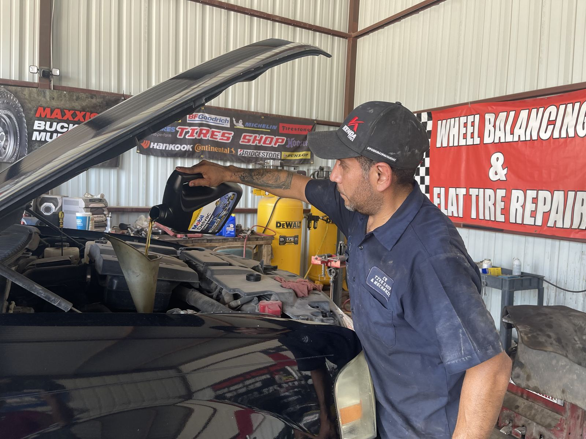
Cambio de aceite
Entra y sale
Cambio de aceite sin la espera de un dealer. Llame para el precio de hoy y lo dejamos listo.
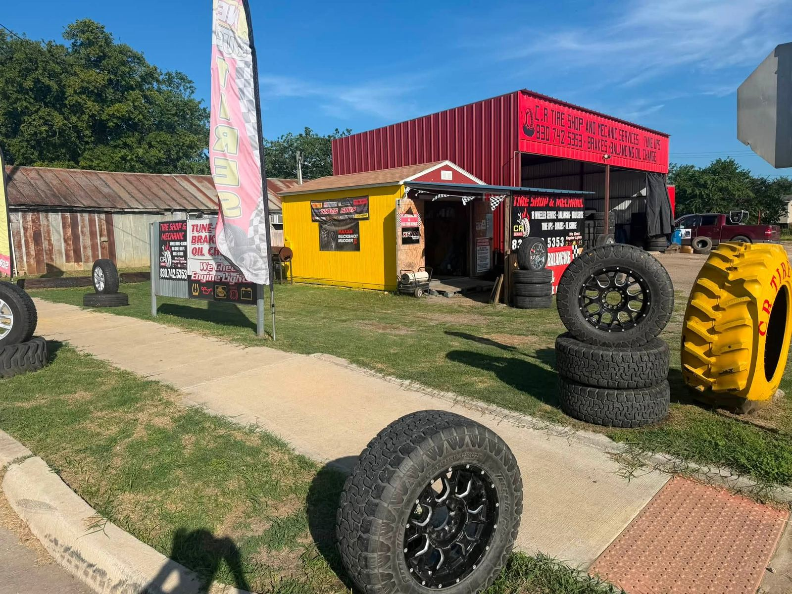
Nixon, TX · Hwy 87 · Abierto hasta tarde seis días
Carros, trocas, tráileres y tractores — parche, montaje y de vuelta al camino. Salimos a la carretera cuando no puede llegar al taller.
¿Cambio de aceite o llantas de tráiler? Llame para el precio de hoy y lo que hay en existencia.

Cambio de aceite
Cambio de aceite sin la espera de un dealer. Llame para el precio de hoy y lo dejamos listo.
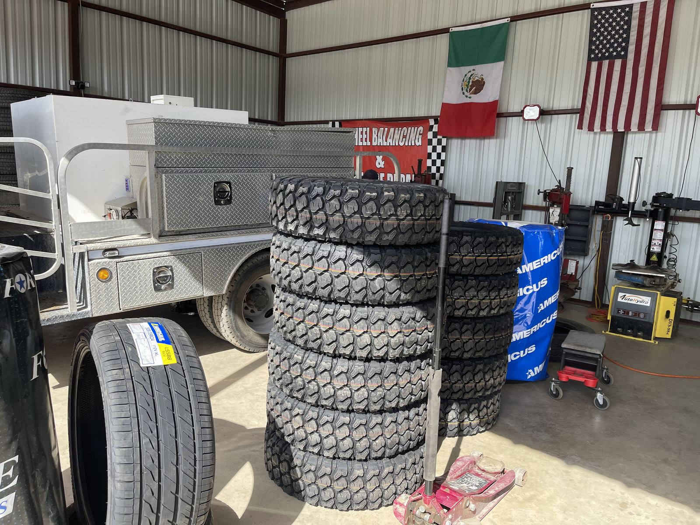
Llantas de tráiler
Llantas nuevas de tráiler en el taller. Llame para confirmar medida antes de venir.
Un solo taller en Central Ave para carros, tráileres y maquinaria del campo — llanta nueva o usada, ponchadas, frenos y diagnóstico.

Llantas de carro, troca, tráiler y tractor — parche, montaje y balanceo.

¿Se quedó en la Hwy 87 o en un camino del condado? Salimos de Nixon — llame y vamos a usted.

La luz de check engine, un freno que rechina o el aceite atrasado — lo diagnosticamos y lo arreglamos aquí mismo.
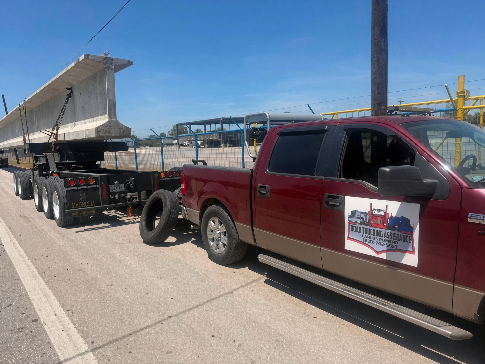
Asistencia para traileros
Nixon está sobre la Hwy 87. Si un tráiler, pipa o tractor se poncha, CR sale del pueblo en lugar de esperar un taller a dos condados.
Carros, trocas, tráileres y llantas de campo — trabajos que sí hicimos aquí en Nixon.
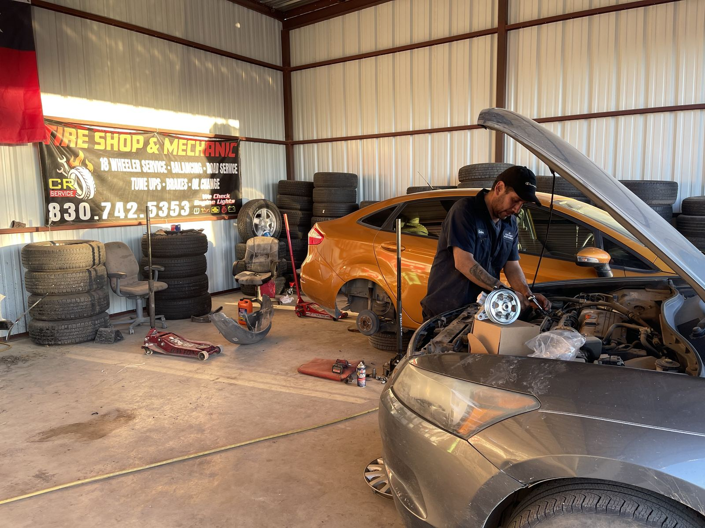
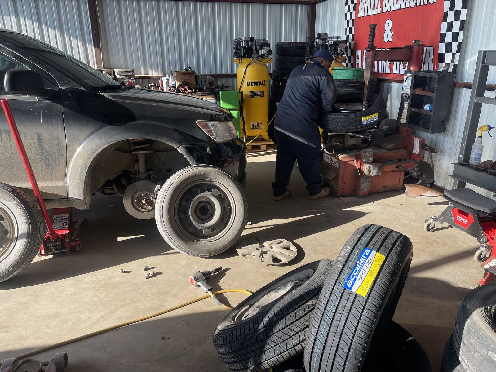
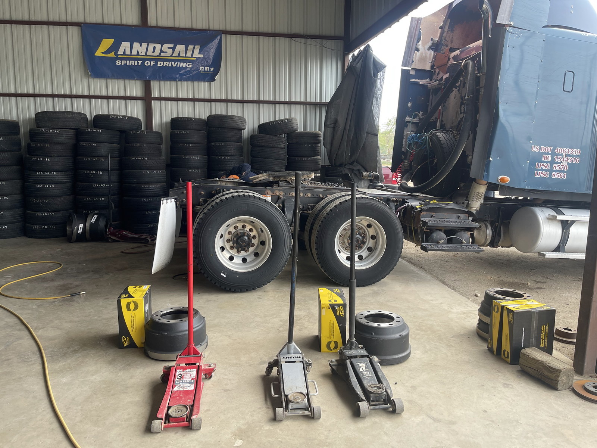
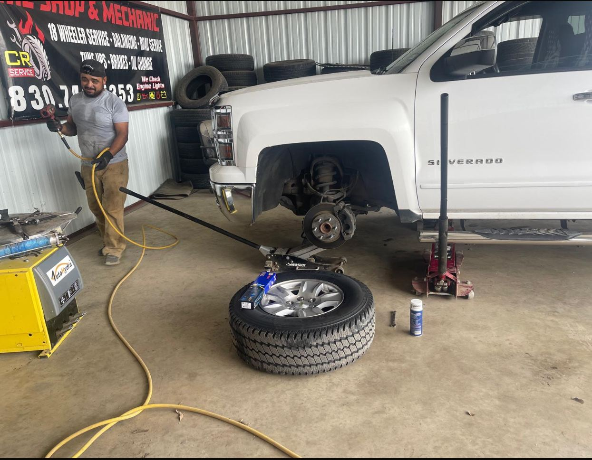
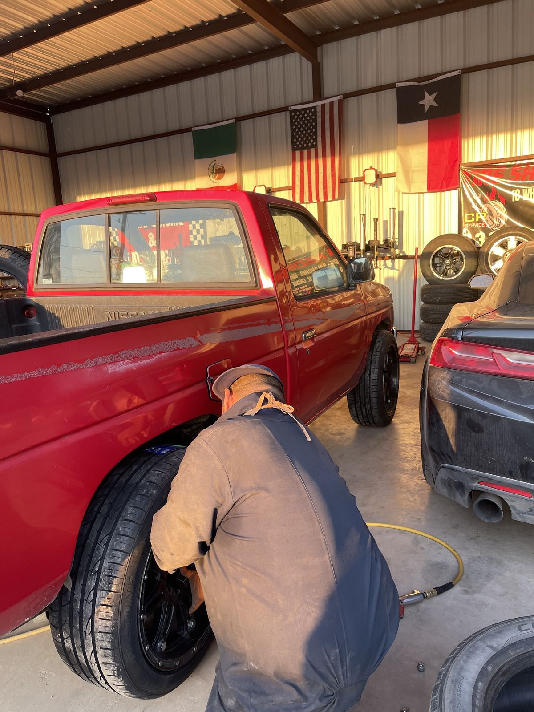
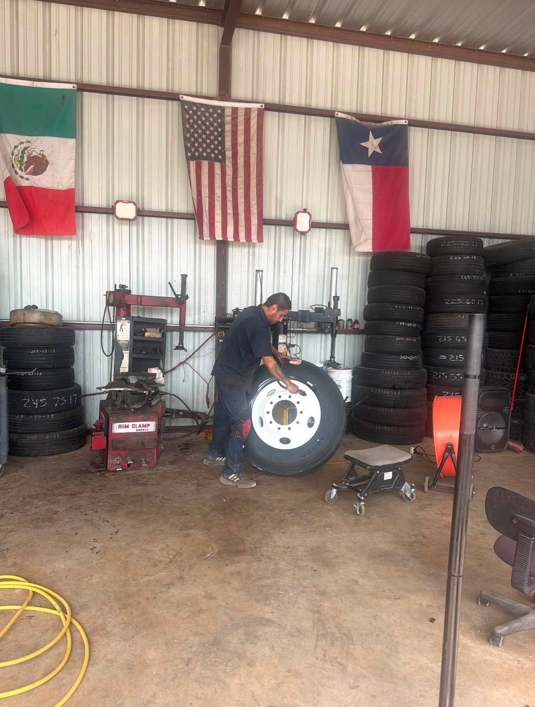
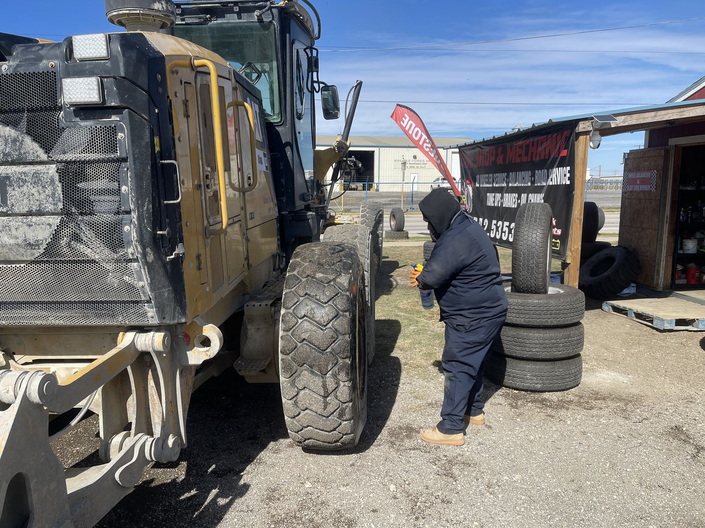
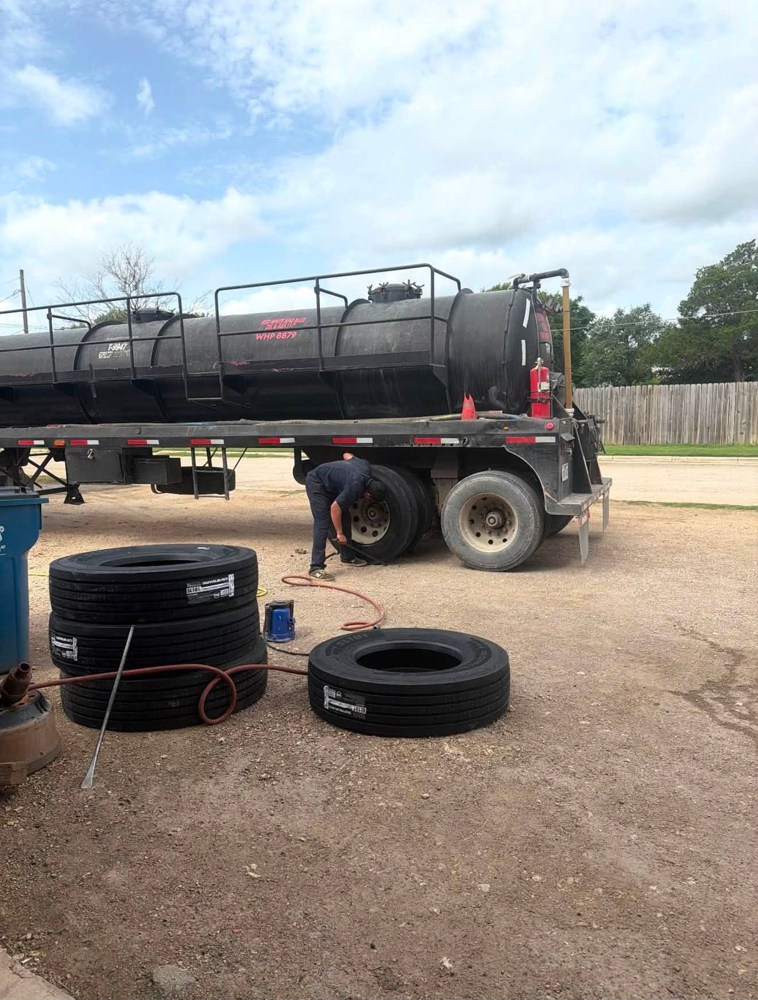
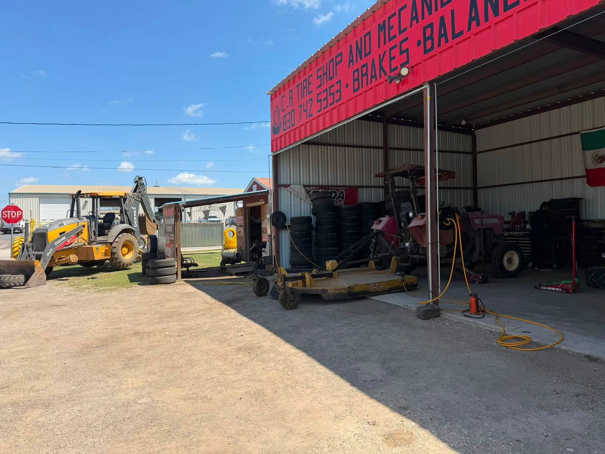
“Se le ponchó la llanta a mi esposa. No me quisieron vender una nueva como en otros lados. Le pusieron parche. Precio razonable. Si tiene problemas con el vehículo, vaya aquí.”
“Gente muy amable y muy atenta!!! Me arreglaron una llanta de troca grande.”
“Nos parchó la llanta por $15. Servicio rápido y amable.”
Hwy 87 · Nixon
Abierto de 7:00 a.m. a 8:00 p.m. de lunes a sábado — tiempo de sobra después del trabajo o antes de un viaje. Domingo cerrado.
{kind=link}